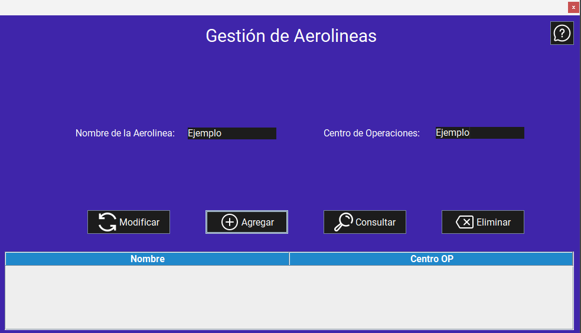

Pantalla principal:
Al iniciar la aplicación, se muestra la pantalla principal de la gestión de aerolíneas. Esta pantalla permite agregar, modificar y eliminar aerolíneas, así como consultar la lista de las aerolíneas registradas en el sistema.

Funcionalidades:
1. Agregar una aerolínea
Para agregar una aerolíneas, siga estos pasos:
- Inicie la aplicación.
- Ingrese los datos en cada campo de texto (Nombre de la aerolínea, centro de operaciones).
- Haga clic en el botón "Agregar". 
Advertencias
2. Consultar una aerolínea
Para consultar una aerolínea, siga estos pasos:
- Inicie la aplicación.
- Si desea consultar la información de todos las aerolíneas registradas, simplemente haga clic en el botón "Consultar".
- Si desea consultar la información de una aerolínea específica, ingrese el nombre de la aerolínea en el campo de texto (Nombre de la aerolínea).
- Haga clic en el botón "Consultar".

Advertencias